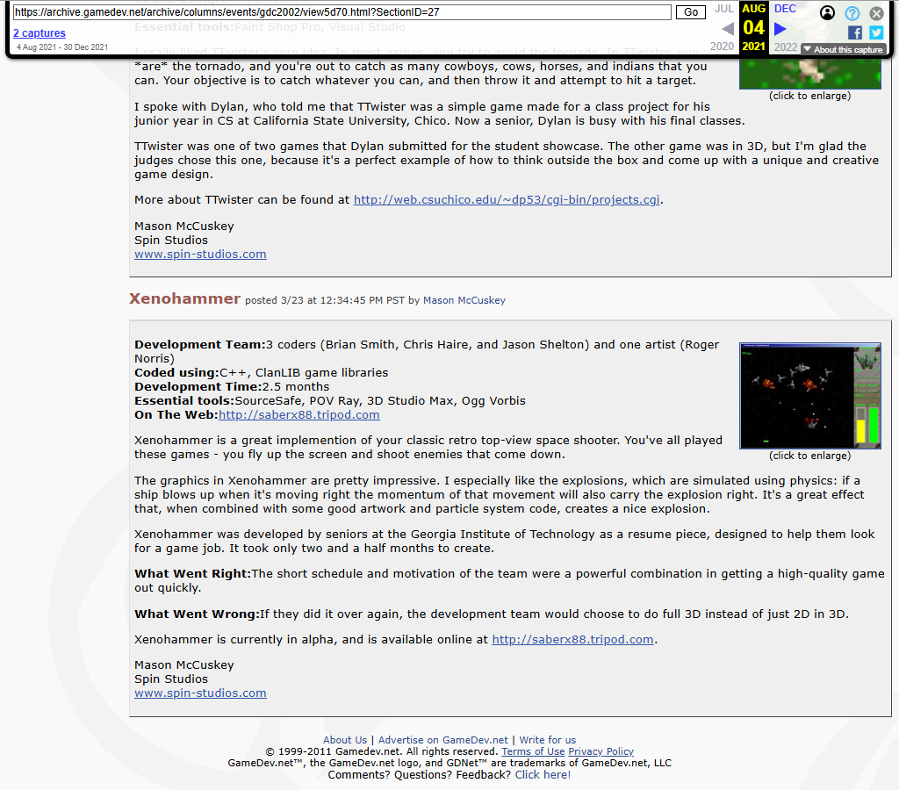

Tripod Dev Site
The original home site with the team pitch, alpha-release copy, feature bullets, and the public-facing XenoHammerGL positioning. This is the live local mirror.
Open live local mirrorA self-contained mini portal for preserved XenoHammer web artifacts. This is meant to feel like a small museum wing: local pages, local navigation, and no required outbound links.
saberx88 Tripod site is the
one mirrored section that still keeps working local links.
The original home site with the team pitch, alpha-release copy, feature bullets, and the public-facing XenoHammerGL positioning. This is the live local mirror.
Open live local mirror
A screenshot-backed exhibit focused on the original team page, preserving the Georgia Tech team roster and the role breakdown for Brian Smith, Chris Haire, Jason Shelton, and Roger Norris.
Open visual exhibit
A rendered museum capture of the Game Development Showcase page for project ID 367, preserving the page visually without any external dependencies.
Open rendered exhibit
A rendered museum capture of the showcase feedback thread, anchored by the archived congratulatory post from GameDev.net staff.
Open rendered exhibit
A screenshot-backed exhibit from the archived Student Showcase article that praised the game's explosions, named the Georgia Tech team, and noted the 2.5 month build.
Open visual exhibit
A screenshot-backed exhibit highlighting the formal announcement that Xenohammer was one of the ten 2002 IGF Student Showcase selections.
Open visual exhibit
A local museum board built from the preserved slide text showing XenoHammer listed as a past IGF Student Showcase winner in a game-design course deck.
Open visual exhibit
A screenshot-backed exhibit from the preserved Georgia Tech PDF, paired with OCR text that highlights the campus-news awards entry listing XenoHammer Video Game.
Open visual exhibit
A visual archival board summarizing the ClanLib 0.5.x and 0.6.x release notes closest to XenoHammer's original development window.
Open visual exhibit